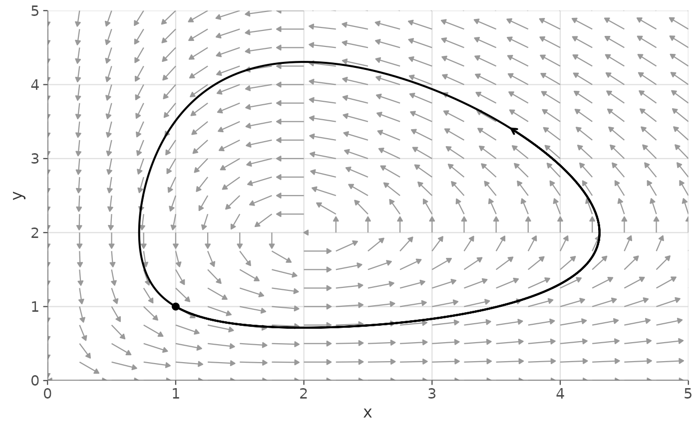
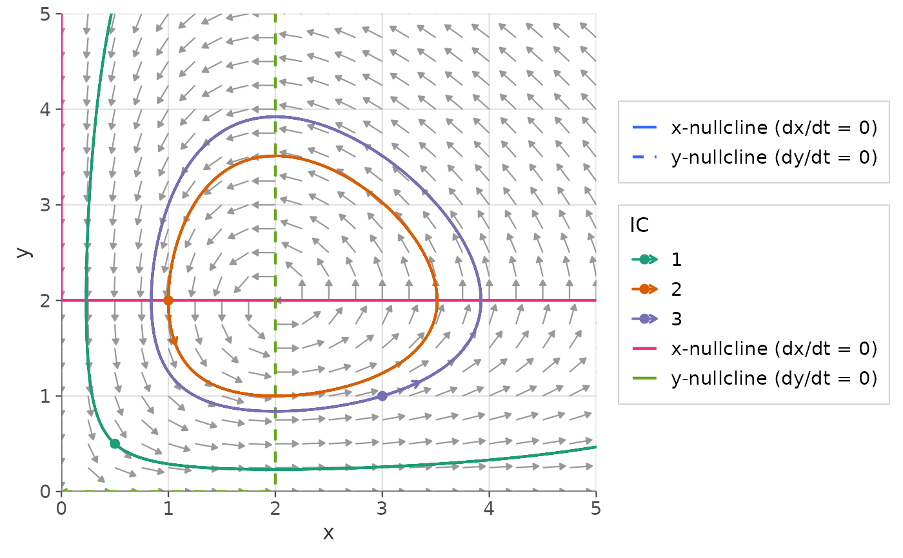
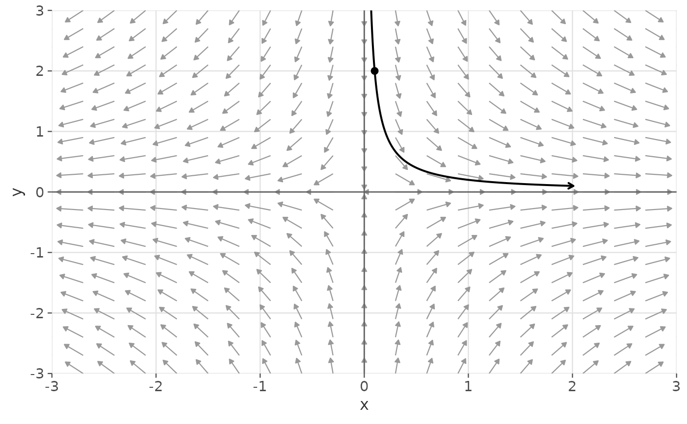

Numerically integrates and plots one or more solution trajectories of a
one- or two-dimensional autonomous ODE system. Returns a list of
ggplot2 layer objects that can be added to a ggplot2::ggplot() object
with +.
Usage
gg_trajectory(
deriv,
y0,
xlim,
ylim,
system = c("two.dim", "one.dim"),
parameters = NULL,
t_end = 10,
t_start_back = NULL,
t_steps = 500L,
method = "lsoda",
color = NULL,
linewidth = 0.7,
add_arrows = TRUE,
arrow_size = 0.3,
add_start_point = TRUE,
start_point_size = 2
)Arguments
- deriv
A function describing the ODE system, in Convention A or B. See ggphasr for details.
- y0
Initial condition(s). One of:
A numeric vector of length 1 (1D) or 2 (2D) for a single initial condition.
A numeric matrix with one row per initial condition (columns are state variables).
A list of numeric vectors, one per initial condition.
- xlim
Numeric vector of length 2. x-axis range. Used to clip trajectories that leave the plot area.
- ylim
Numeric vector of length 2. y-axis range.
- system
Character:
"two.dim"(default) or"one.dim".- parameters
Parameter vector or list passed to
deriv.- t_end
Numeric. End time for forward integration. Default:
10.- t_start_back
Numeric or
NULL. End time for backward integration (should be negative). IfNULL(default), only forward integration is performed. Set to a negative value (e.g.,-10) to also integrate backward from each initial condition.- t_steps
Integer. Number of time steps per integration direction. Default:
500. Increase for smoother curves on long integrations.- method
Character. deSolve integration method. Default:
"lsoda"(automatically switches between stiff and non-stiff solvers).- color
Character or
NULL. Trajectory color. IfNULLand there are multiple initial conditions, each trajectory gets a different color from a discrete palette. If a single color string (e.g.,"black"), all trajectories share that color. Default:NULL.- linewidth
Numeric. Trajectory line width. Default:
0.7.- add_arrows
Logical. If
TRUE(default), adds an arrow head at the midpoint of each trajectory segment showing the direction of flow.- arrow_size
Numeric. Size of the direction arrow heads in lines. Default:
0.3.- add_start_point
Logical. If
TRUE(default), marks each initial condition with a filled circle.- start_point_size
Numeric. Size of the initial condition point. Default:
2.
Value
A list of ggplot2 layer objects. Add to a ggplot with +.
Examples
# Single trajectory on a Lotka-Volterra phase plane
lv_params <- c(alpha = 1, beta = 0.5, delta = 0.5, gamma = 1)
gg_flow_field(ode_lotka_volterra,
xlim = c(0, 5), ylim = c(0, 5),
parameters = lv_params) +
gg_trajectory(ode_lotka_volterra,
y0 = c(1, 1),
xlim = c(0, 5),
ylim = c(0, 5),
parameters = lv_params)

# Multiple initial conditions from a matrix
ics <- matrix(c(0.5, 0.5,
1.0, 2.0,
3.0, 1.0), ncol = 2, byrow = TRUE)
gg_flow_field(ode_lotka_volterra,
xlim = c(0, 5), ylim = c(0, 5),
parameters = lv_params) +
gg_nullclines(ode_lotka_volterra,
xlim = c(0, 5), ylim = c(0, 5),
parameters = lv_params) +
gg_trajectory(ode_lotka_volterra,
y0 = ics,
xlim = c(0, 5),
ylim = c(0, 5),
parameters = lv_params,
t_end = 20)
#> Scale for colour is already present.
#> Adding another scale for colour, which will replace the existing scale.

# Forward and backward integration near a saddle point
gg_flow_field(ode_example_08,
xlim = c(-3, 3), ylim = c(-3, 3)) +
gg_trajectory(ode_example_08,
y0 = c(0.1, 2),
xlim = c(-3, 3),
ylim = c(-3, 3),
t_end = 3,
t_start_back = -3)
